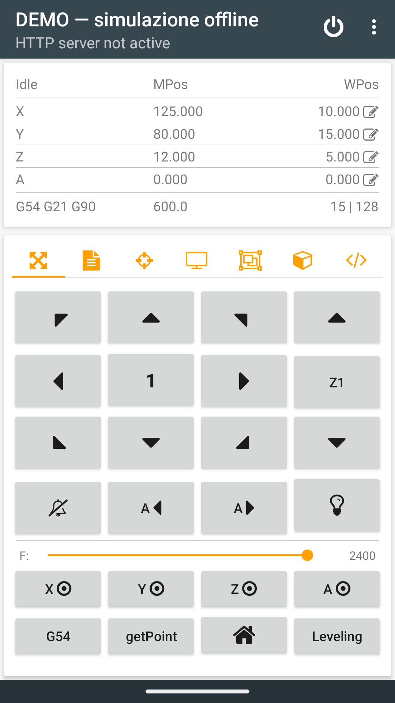
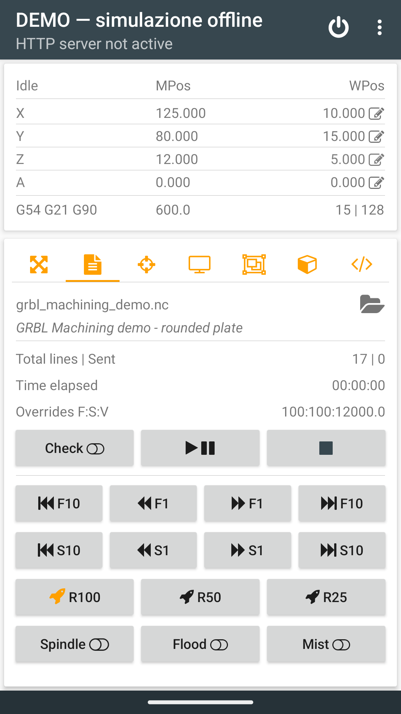
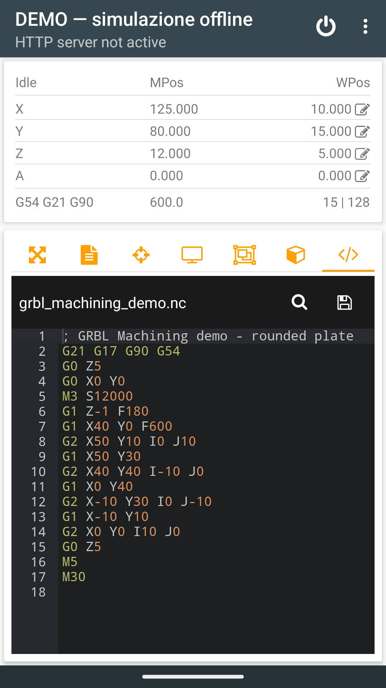
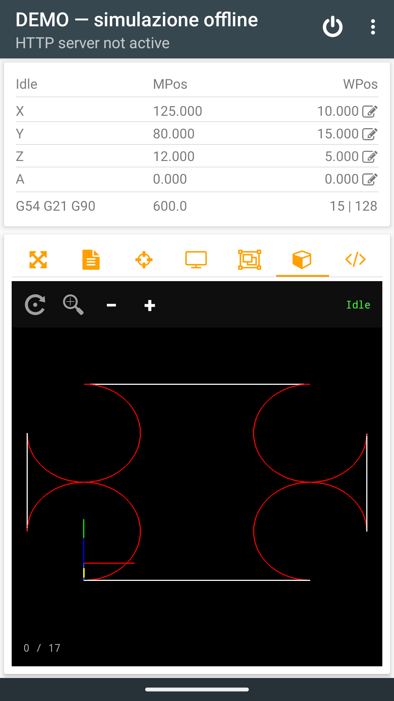
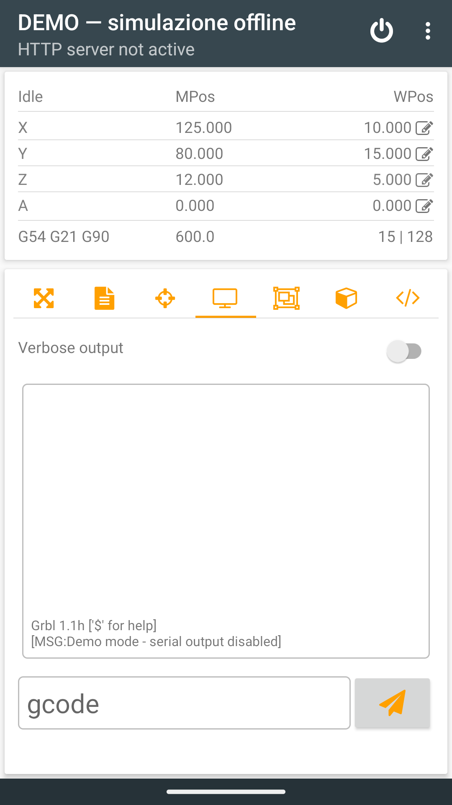
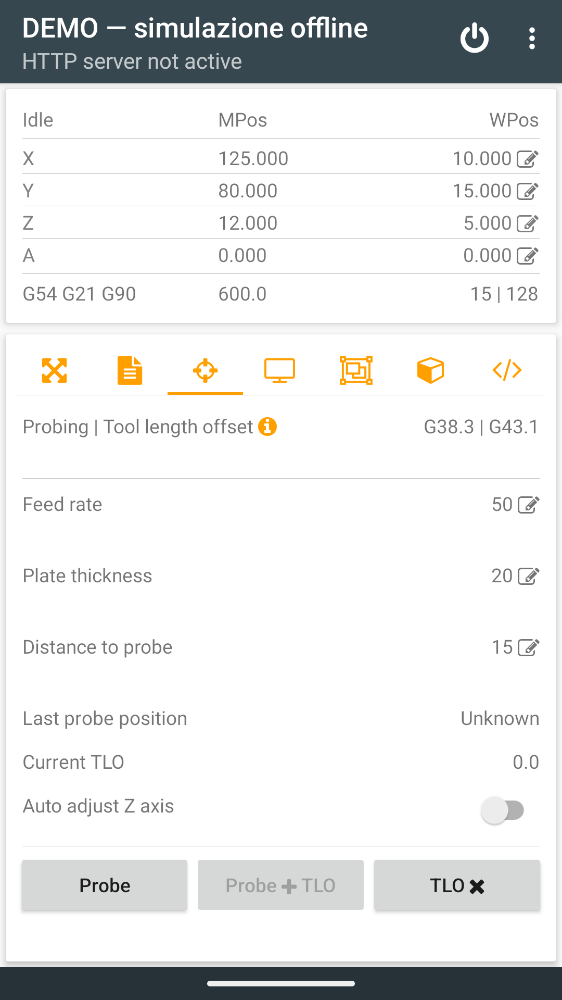
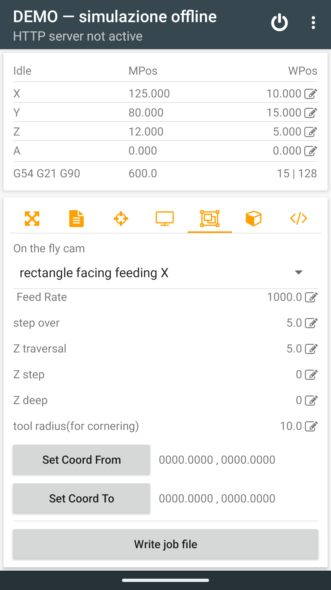
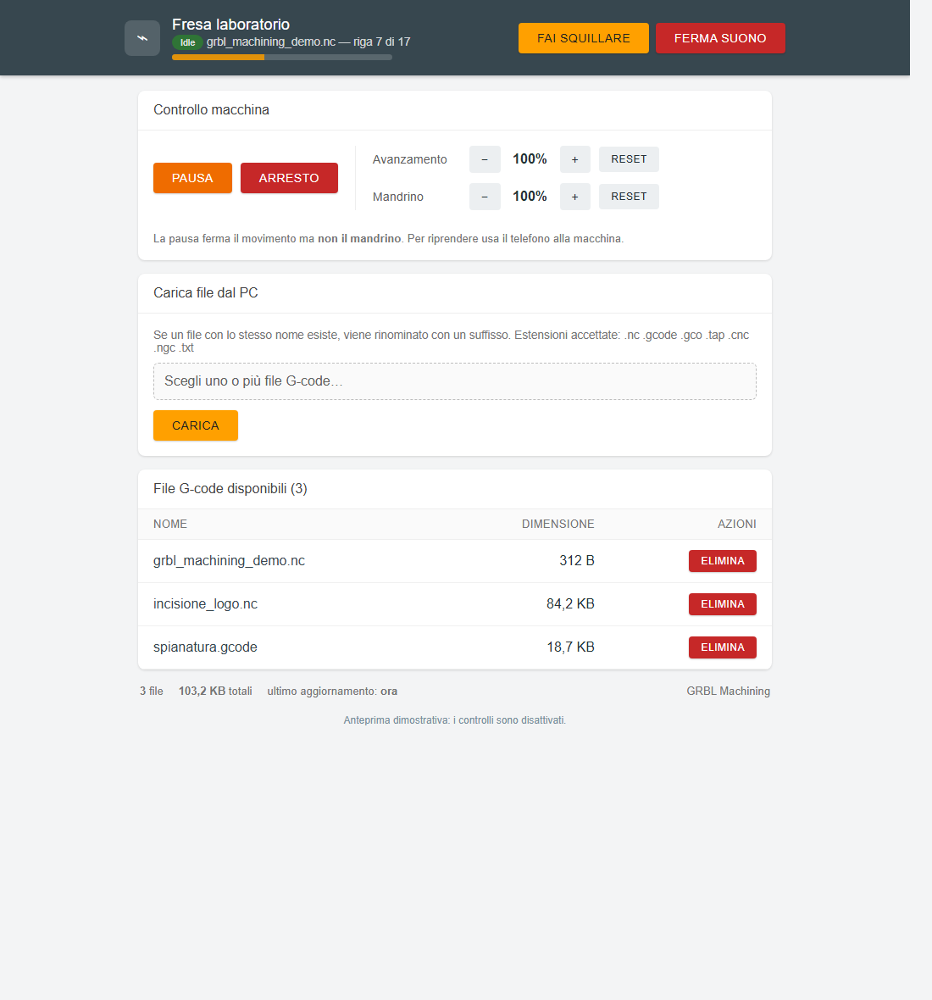
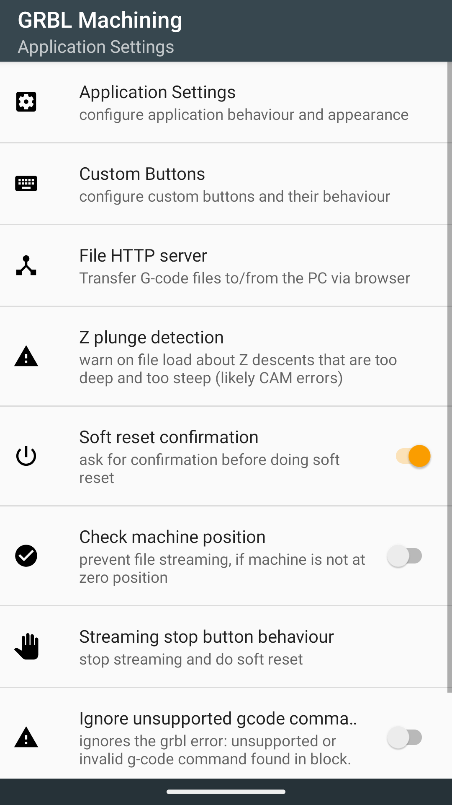

Before you start
The app communicates with GRBL 1.1 and FluidNC controllers over Bluetooth or USB OTG. Before the first job, verify axis directions, units, homing, limits and the work origin.
Connect the machine
- Switch on the CNC controller.
- Tap the connection icon in the top bar.
- Choose Bluetooth or USB OTG, then select the device.
- Wait for the machine state and coordinates to update.
If work-position restoration is enabled, the app may offer to reapply the saved position with G10 L20 P0 after reconnecting. Accept only if neither the tool nor the machine has moved.
App layout
The main tabs cover file streaming, jogging, probing, console, CAM, editing and visualization. Machine state, coordinates and connection/reset commands remain at the top.
- File Sender: load, check and stream G-code; control pause, stop and overrides.
- Jogging: move X/Y/Z/A and manage work zeros, G54–G57, homing, points and flashlight.
- Probing: Z probing and tool-length compensation.
- Console: send commands and read controller responses.
- CAM: generate simple geometric jobs on the device.
Jogging, zeros and points

Jog screen in Demo mode, with simulated coordinates and controls available without a machine.In step mode, each tap moves by the displayed distance. Continuous mode is identified by the icon for X/Y/A and the icon for Z. Hold an arrow to move and release it to send jog cancel. X/Y/A and Z have separate step modes.
The bell unlocks an alarm ($X), the home icon starts homing after confirmation, and the light bulb controls the phone flashlight. Four custom buttons can each hold multiple commands and separate short/long actions.
Load and run a G-code file

File Sender in Demo mode with a sample file and active controls.- Tap the file selector and choose the app folder or Android system picker.
- Check the origin, Z height, tool, workholding and Idle state.
- Open the visualizer and inspect the toolpath.
- Press Play, review the safety summary and confirm.
- Use pause/resume during the job; Stop ends the job.
Run from line
Long-press Play, enter the line number shown in the editor and follow the procedure. The app reconstructs the preceding modal state—including units, plane, coordinate system, distance mode, feed, spindle and coolant—then offers automatic positioning at a safe Z or manual placement.
When enabled, Z-plunge detection checks the file during loading and warns about unusually deep, steep descents. It is a safety aid, not a substitute for inspecting the toolpath.
Editor and visualizer

G-code editor with search, syntax highlighting and save.The editor's line numbers match “Run from line”. The OpenGL visualizer supports drag, pinch zoom, reset and fit-to-view. During streaming, completed toolpath segments are dimmed.

The sample toolpath displayed in the visualizer.Command console

Console for controller responses and manual commands.Type a command in the bottom field and press Send. Verbose output shows additional information. Use the console only when you understand the GRBL or FluidNC command being sent.
Z probing and tool length offset

Probe parameters, automatic Z adjustment and tool-length compensation.- Set feed rate, plate thickness and maximum probing distance.
- Connect the probe circuit and test contact before movement.
- Start Probe and confirm.
- For a tool change, probe with the first tool, change it without losing the reference, then use Probe + TLO.
G49 cancels tool-length compensation.
Three-point auto-leveling
- Load the G-code in File Sender.
- Move to the first point, probe it and press Get point.
- Repeat at two more non-collinear points.
- Long-press Leveling.
- Load the new
_leveledfile and inspect it in the visualizer.
On-the-fly CAM

Quick geometric toolpath generation inside the app.The CAM tab generates lines, circles and rectangles with multiple Z passes. Set Point 1, Point 2, job type, feed, total depth, depth per pass, clearance height and any tool/step-over values. “Write job file” saves job.nc and loads it in File Sender.
File transfer and browser control

Browser interface reconstructed from the app server: job status, pause/stop, overrides, upload and G-code file management.- Open Settings → File HTTP server.
- Set a password of at least four characters and enable the server.
- Connect the PC and Android device to the same trusted Wi-Fi network.
- Open the address shown in the notification; username:
grbl.
The page can upload/download G-code, show job state and progress, pause or stop a job, change overrides and make the host device ring.
Important settings

Main settings: general behavior, custom buttons, HTTP server and Z-plunge detection.- Default connection and status update interval.
- Maximum jogging speed and custom buttons.
- Work-zero check before streaming.
- Z-plunge detection thresholds.
- Restore work coordinates after reconnecting.
- HTTP server port and password.
- App and browser-interface color scheme.